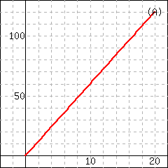
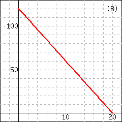
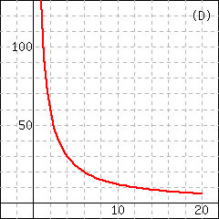
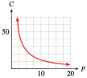
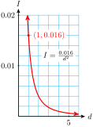

How long does it take to travel a distance of 600 miles? The answer depends on your average speed. If you are on a bicycle trip, your average speed might be 15 miles per hour. In that case, your traveling time will be
\begin{equation*}
T = \frac{D}{R}= \frac{600}{15}= 40 \text{ hours}
\end{equation*}
(Of course, you will have to add time for rest stops; the 40 hours are just your travel time.)
If you are driving your car, you might average 50 miles per hour. Your travel time is then
\begin{equation*}
T = \frac{D}{R}= \frac{600}{50}= 12 \text{ hours}
\end{equation*}
If you take a commercial air flight, the plane’s speed might be 400 miles per hour, and the flight time would be
\begin{equation*}
T = \frac{D}{R}= \frac{600}{400}= 1.5 \text{ hours}
\end{equation*}
You can see that for higher average speeds, the travel time is shorter. In other words, the time needed for a 600-mile journey is a decreasing function of average speed. In fact, a formula for the function is
\begin{equation*}
T = f (R) = \frac{600}{R}
\end{equation*}
This function is an example of inverse variation. A table of values and a graph of the function are shown below.
\(R\)
\(T\)
\(10\)
\(60\)
\(15\)
\(40\)
\(20\)
\(30\)
\(50\)
\(12\)
\(200\)
\(3\)
\(400\)
\(1.5\)
Inverse Variation.
\(y\) varies inversely with \(x\) if
\begin{equation*}
y = \dfrac{k}{x}\text{, }x \ne 0
\end{equation*}
where \(k\) is a positive constant.
Caution5.5.1.
Inverse variation describes a decreasing function, but not every decreasing function represents inverse variation. People sometimes mistakenly use the phrase varies inversely to describe any decreasing function, but if \(y\) varies inversely with \(x\text{,}\) the variables must satisfy an equation of the form \(y = \dfrac{k}{x}\text{,}\) or \(xy = k\text{.}\)
To decide whether two variables truly vary inversely, we can check whether their product is constant. For instance, in the preceding travel-time example, we see from the table that \(RT = 600\text{.}\)
\(R\)
\(10\)
\(15\)
\(20\)
\(50\)
\(200\)
\(400\)
\(T\)
\(60\)
\(40\)
\(30\)
\(12\)
\(3\)
\(1.5\)
\(RT\)
\(600\)
\(600\)
\(600\)
\(600\)
\(600\)
\(600\)
Checkpoint5.5.2.QuickCheck 1.
How can you test whether a table for \(y=f(x)\) represents inverse variation?
Check whether \(xy\) is a constant.
Check whether the function is decreasing.
Check whether \(y\) is the reciprocal of \(x\text{.}\)
Check whether \(y/x\) is a constant.
Answer.
\(\text{Choice 1}\)
Solution.
Check whether \(xy\) is a constant.
Subsection5.5.2Finding a Formula for Inverse Variation
If we know that two variables vary inversely and we can find one pair of corresponding values for the variables, we can determine \(k\text{,}\) the constant of variation.
Example5.5.3.
The amount of current, \(I\text{,}\) that flows through a circuit varies inversely with the resistance, \(R\text{,}\) on the circuit. An iron with a resistance of 12 ohms draws 10 amps of current.
Write a formula that gives current as a function of the resistance. \(~\alert{\text{[TK]}}\)
Complete the table and graph your function in a suitable window.
\(R\)
\(1\)
\(2\)
\(10\)
\(20\)
\(I\)
\(\hphantom{0000} \)
\(\hphantom{0000} \)
\(\hphantom{0000} \)
\(\hphantom{0000} \)
How much current is drawn by a light bulb with a resistance of 533.3 ohms?
What is the resistance of a toaster that draws 12.5 amps of current?
Solution.
Because \(I\) varies inversely with \(R\text{,}\) we know that \(I=\dfrac{k}{R}\text{.}\) To find the constant \(k\text{,}\) we substitute \(\alert{10}\) for \(I\) and \(\alert{12}\) for \(R\text{.}\)
Delbert’s officemates want to buy a $120 gold watch for a colleague who is retiring. The cost per person is inversely proportional to the number of people who contribute.
Express the cost per person, \(C\text{,}\) as a function of the number of people, \(p\text{,}\) who contribute.
\(=\)
Sketch the function for \(0 \le p \le 20\text{.}\)



The graph of cost per person is
(A)
(B)
(C)
(D)
none of the above
Answer1.
\(C;\,\frac{120}{p}\)
Answer2.
\(\text{(D)}\)
Solution.
\(\displaystyle C=\dfrac{120}{p}\)
A graph is also shown below.

Subsection5.5.3Inverse Variation with a Power
We can also define inverse variation with a power of the variable.
Inverse Variation with a Power.
\(y\) varies inversely with \(x^n\) if
\begin{equation*}
y = \frac{k}{x^n}\text{, }x \ne 0
\end{equation*}
where \(k\) and \(n\) are positive constants.
We may also say that \(y\) is inversely proportional to \(x^n\text{.}\)
Example5.5.5.
The intensity of electromagnetic radiation, such as light or radio waves, varies inversely with the square of the distance from its source. Radio station KPCC broadcasts a signal that is measured at 0.016 watt per square meter by a receiver 1 kilometer away.
Write a formula that gives signal strength as a function of distance.
If you live 5 kilometers from the station, what is the strength of the signal you will receive?
Let \(I\) stand for the intensity of the signal in watts per square meter, and \(d\) for the distance from the station in kilometers. Then \(I = \dfrac{k}{d^2}\text{.}\) To find the constant \(k\text{,}\) we substitute \(\alert{0.016}\) for \(I\) and \(1\) for \(d\text{.}\) Solving for \(k\) gives us
Now we can substitute \(\alert{5}\) for \(d\) and solve for \(I\text{.}\)
\begin{equation*}
I = \frac{0.016}{\alert{5}^2}= 0.00064
\end{equation*}
At a distance of 5 kilometers from the station, the signal strength is 0.00064 watt per square meter.
The graph is shown below.

To summarize, an inverse variation is an example of a decreasing function, but not every decreasing function describes an inverse variation.
Test for Inverse Variation.
If the product \(~yx^n~\) is constant and \(n\) is positive, then \(y\) varies inversely with \(x^n\text{.}\)
The graphs of some typical inverse variations are shown below. They are versions of the basic graphs you studied in Section 5.3, but restricted to positive \(x\)-values only.
Checkpoint5.5.6.QuickCheck 2.
Use the table to decide whether \(H\) could vary inversely with \(m^2\text{.}\)
\(m\)
\(0.05\)
\(0.20\)
\(0.25\)
\(0.4\)
\(H\)
\(240\)
\(15\)
\(9.6\)
\(3.75\)
Yes
No
Answer.
\(\text{Yes}\)
Solution.
Yes, the product \(Hm^2\) is the constant 0.6 for all pairs \((m,H)\) in the table.
In Section 5.4, we considered the scaling property of direct variation. If \(y=kx\) and you double the value of \(x\text{,}\) then the value of \(y\) doubles also. If \(y=kx^2\) and you double the value of \(x\text{,}\) then the value of \(y\) is multiplied by a factor of \(2^2=4\text{.}\)
What happens when you double the input of an inverse variation?
Example5.5.7.
The weight, \(w\text{,}\) of an object varies inversely with the square of its distance, \(d\text{,}\) from the center of the Earth. Thus,
\begin{equation*}
w = \dfrac{k}{d^2}
\end{equation*}
If you double your distance from the center of the Earth, what happens to your weight? What if you triple the distance?
Solution.
Suppose you weigh \(W\) pounds at distance \(D\) from the center of the Earth. Then \(W = \dfrac{k}{D^2}\text{.}\) At distance \(2D\text{,}\) your weight will be
\begin{equation*}
w = \frac{k}{(2D)^2}= \frac{k}{4D^2}= \frac{1}{4}\cdot\frac{k}{D^2}
= \frac{1}{4}W
\end{equation*}
Your new weight will be \(\dfrac{1}{4}\) of your old weight. By a similar calculation, you can check that by tripling the distance, your weight will be reduced to \(\dfrac{1}{9}\) of its original value.
Checkpoint5.5.8.Practice 2.
The amount of force, \(F\text{,}\) (in pounds) needed to loosen a rusty bolt with a wrench is inversely proportional to the length, \(l\text{,}\) of the wrench. Thus,
\begin{equation*}
F = \frac{k}{l}
\end{equation*}
If you increase the length of the wrench by 50% so that the new length is \(1.5l\text{,}\) what happens to the amount of force required to loosen the bolt?
For Problems 1-4, choose variables and write an equation relating them. Which equations describe inverse variation?
1.
Rachel spends one-third of her income on rent.
2.
There were two candidates in the election for mayor of Centerville, Smith and Jones. A total of 4800 votes were cast (no write-in votes).
3.
Water is leaking from a 2000-gallon tank at a rate of one cup per day. (There are 16 cups in a gallon.) The amount of water left in the tank is a function of the amount leaked out.
4.
Craig is planning to tile the floor of a 250-square foot room. He is deciding what size tile to use, and how many tiles he will need.
Skills Practice
5.
Which of these graphs could describe inverse variation?
6.
Which of these graphs could describe inverse variation?
Exercise Group.
For Problems 7 and 8,
Use the values in the table to find the constant of variation, \(k\text{,}\) and write \(y\) as a function of \(x\text{.}\)
Fill in the rest of the table with the correct values.
What happens to \(y\) when you double the value of \(x\text{?}\)
7.
\(y\) varies inversely with \(x\text{.}\)
\(x\)
\(4\)
\(\hphantom{\qquad}\)
\(20\)
\(30\)
\(\hphantom{\qquad}\)
\(y\)
\(\hphantom{\qquad}\)
\(15\)
\(6\)
\(\hphantom{\qquad}\)
\(3\)
8.
\(y\) varies inversely with the square of \(x\text{.}\)
\(x\)
\(0.2\)
\(\hphantom{\qquad}\)
\(2\)
\(4\)
\(\hphantom{\qquad}\)
\(y\)
\(\)
\(80\)
\(\hphantom{\qquad}\)
\(1.25\)
\(0.8\)
Exercise Group.
For Problems 9–12, decide whether
\(y\) varies inversely with \(x\)
\(y\) varies inversely with \(x^2\)
\(y\) does not vary inversely with a power of \(x\)
Explain why your choice is correct. If your choice is (a) or (b), find the constant of variation, \(k\text{.}\)
9.
\(x\)
\(0.5\)
\(2\)
\(3\)
\(6\)
\(y\)
\(288\)
\(18\)
\(8\)
\(2\)
10.
\(x\)
\(0.5\)
\(2\)
\(4\)
\(5\)
\(y\)
\(100.0\)
\(25.0\)
\(12.5\)
\(10.0\)
11.
\(x\)
\(1\)
\(1.3\)
\(3\)
\(4\)
\(y\)
\(4.0\)
\(3.7\)
\(2.0\)
\(1.0\)
12.
\(x\)
\(0.5\)
\(2\)
\(3\)
\(5\)
\(y\)
\(180.00\)
\(11.25\)
\(5.00\)
\(1.80\)
Applications
13.
The marketing department for a paper company is testing wrapping paper rolls in various dimensions to see which shape consumers prefer. All the rolls contain the same amount of wrapping paper.
\(\text{Width (feet)} \)
\(2\)
\(2.5\)
\(3\)
\(\text{Length (feet)} \)
\(12\)
\(9.6\)
\(8\)
\(\text{Length}\times \text{Width} \)
\(\hphantom{00000}\)
\(\hphantom{00000}\)
\(\hphantom{00000}\)
Compute the product of the length and width for each roll of wrapping paper. What is the constant of inverse proportionality?
Express the length, \(L\text{,}\) of the paper as a function of the width, \(w\text{,}\) of the roll.
Sketch a graph of the function by hand, and label the scales on the axes.
14.
The force of gravity on a \(1\)-kilogram mass is inversely proportional to the square of the object’s distance from the center of the Earth. The table shows the force on the object, in newtons, at distances that are multiples of the Earth’s radius.
\(\text{Distance (Earth radii)} \)
\(1\)
\(2\)
\(4\)
\(\text{Force (newtons)} \)
\(9.8\)
\(2.45\)
\(0.6125\)
\(\text{Force}\times\text{distance}^2\)
\(\hphantom{00000}\)
\(\hphantom{00000}\)
\(\hphantom{00000}\)
Compute the products of the force and the square of the distance. What is the constant of inverse proportionality?
Express the gravitational force, \(F\text{,}\) on a \(1\)-kilogram mass as a function of its distance, \(r\text{,}\) from the Earth’s center, measured in Earth radii.
Sketch a graph of the function by hand, and label the scales on the axes.
15.
Computer monitors produce a magnetic field. The effect of the field, \(B\text{,}\) on the user varies inversely with his or her distance, \(d\text{,}\) from the screen. The field from a certain color monitor was measured at 22 milligauss 4 inches from the screen.
Express the field strength as a function of distance from the screen. Complete the table and graph your function in a suitable window.
\(d\)
\(1\)
\(2\)
\(12\)
\(24\)
\(B\)
\(\hphantom{0000} \)
\(\hphantom{0000} \)
\(\hphantom{0000} \)
\(\hphantom{0000} \)
What is the field strength 10 inches from the screen?
An elevated risk of cancer can result from exposure to field strengths of 4.3 milligauss. How far from the screen should the computer user sit to keep the field level below 4.3 milligauss?
If you double your distance from the screen, how does the field strength change?
16.
Boyle’s law says that the pressure on a gas is inversely proportional to the volume it occupies. For example, deep-sea divers who return to the surface too rapidly get "the bends" when nitrogen bubbles in the blood expand. Suppose a submarine at a depth of 100 meters, where the pressure is 10.7 atmospheres, releases a bubble of volume 1.5 cubic centimeters.
Find a formula for the volume of the bubble as a function of the pressure.
What will the volume of the bubble be when it reaches the surface, where the pressure is 1 atmosphere?
Graph your function.
17.
After the 2017 wildfires, California needs to replant 129,000,000 trees. The amount of time this will take is inversely proportional to the number of workers planting trees. On average, one worker can plant 2000 tree seedlings each day.
How many days would it take 100 workers to plant the trees?
Write a formula for the number of working days, \(D\text{,}\) it will take \(n\) workers to plant the trees.
How many workers would be needed to plant the trees in 300 working days?
Exercise Group.
The functions described by a table or a graph in Problems 18–21 are examples of inverse variation.
Find a formula for the function, including the constant of variation, \(k\text{.}\)
Answer the question in the problem.
18.
If the price of mushrooms goes up, the amount consumers are willing to buy goes down. The graph shows the number of tons of shiitake mushrooms, \(m\text{,}\) sold in California each week as a function of their price, \(p\text{.}\) If the price of shiitake mushrooms rises to $10 per pound, how many tons will be sold?
19.
When an adult plays with a small child on a seesaw, the adult must sit closer to the pivot point to balance the seesaw. The graph shows this distance, \(d\text{,}\) as a function of the adult’s weight, \(w\text{.}\) How far from the pivot must Kareem sit if he weighs 280 pounds?
20.
The thermocline is a layer of ocean water where the temperature changes rapidly. The table shows the temperature of the water as a function of depth in the thermocline. What is the ocean temperature at a depth of 500 meters?
Depth (m)
Temperature (\(\degree\)C)
\(200\)
\(20\)
\(400\)
\(10\)
\(1000\)
\(4\)
21.
The shorter the length of a vibrating guitar string, the higher the frequency of the vibrations. The fifth string is 65 centimeters long and is tuned to A (with a frequency of 220 vibrations per second). The placement of the fret relative to the bridge changes the effective length of the guitar string. The table shows frequency as a function of effective length. How far from the bridge should the fret be placed for the note C (256 vibrations per second)?
Length (cm)
Frequency
\(55\)
\(260\)
\(57.2\)
\(250\)
\(65\)
\(220\)
\(71.5\)
\(200\)
22.
The intensity of illumination, \(I\text{,}\) from a lamp varies inversely with the square of your distance, \(d\text{,}\) from the lamp.
If you double your distance from a reading lamp, what happens to the illumination?
If you triple the distance, what happens to the illumination?
If you increase the distance by 25%, what happens to the illumination?